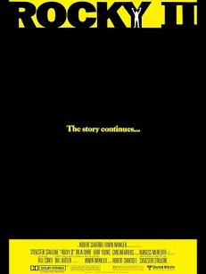
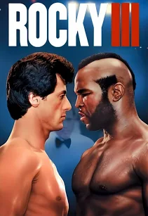
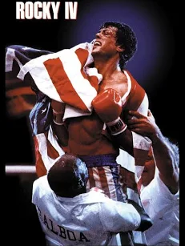
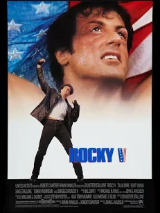
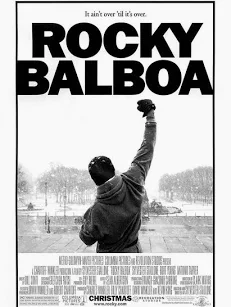

Home
Rocky Synopsis
Rocky Balboa is a part-time loan shark and part-time boxer struggling to make a life for himself. One day he gets the opportunity of a lifetime to fight the heavyweight champion of the world and is determined to not let the opportunity go to waste.

Company Credits: Produced by Chartoff-Winkler Productions. Distributed by United Artists
Release Date: November 21, 1976
Genre(s): Sports Drama
Rating: PG
Running Time: 119 minutes
Rocky II Synopsis
After ceasing the moment and going the distance in his fight for the heavyweight championship, Rocky Balboa is finding difficulty coming back to normal life. With a new wife and baby he is struggling to provide for his family. Rocky is once again given the shot of the lifetime to rematch Apollo Creed but this time he wants to do better.

Company Credits: Produced by Chartoff-Winkler Productions. Distributed by United Artists
Release Date: June 15, 1979
Genre(s): Sports Drama
Rating: PG
Running Time: 120 minutes
Rocky III Synopsis
Coming off beating Apollo Creed for the heavyweight championship of the world, Rocky Balboa is living his best life. He's worldwide famous, has all the money he could ever dream of, and a beautiful family. In the shadows a new challenger named Clubber Lang is climbing the rankings and determined to take what Rocky has. Rocky agrees to fight Clubber and in the same night Rocky not only loses to Clubber but loses his trainer/father-figure Mickey Goldmill, and his sense of manhood. Does Rocky have what it takes to get his life and career back on track?

Company Credits: Produced by Chartoff-Winkler Productions. Distributed by MGM/United Artists Entertainment Co.
Release Date: May 28, 1982
Genre(s): Sports Drama
Rating: PG
Running Time: 99 minutes
Rocky IV Synopsis
After defying the odds once again and reclaiming his title and manhood from Clubber Lang, Rocky is settling back into his normal life when former enemy turned best friend Apollo Creed asks for Rocky's help. Apollo wants Rocky to help him train for an exhibition fight against Russian superhuman Ivan Drago. Rocky reluctantly agrees and fight night turns intro a tragedy as the Drago kills Creed in the ring. Rocky watched his best friend die in front of him and challenges Drago to a fight.

Company Credits: Produced by Chartoff-Winkler Productions. Distributed by MGM/United Artists Entertainment Co.
Release Date: November 27, 1985
Genre(s): Sports Drama
Rating: PG
Running Time: 91 minutes
Rocky V Synopsis
Coming off a dramatic 15th round KO win over the invincible looking Ivan Drago, Rocky Balboa is an American super hero. Shortly after coming back home Rocky loses all his money and fortune and is forced to return back to the streets of Philadelphia. Struggling with the internal pain of losing everything he worked for, Rocky finds hope in training a young heavyweight named Tommy Gunn.

Company Credits: Produced by Chartoff-Winkler Productions with Star Partners III Ltd. Distributed by MGM/United Artists Entertainment Co.
Release Date: November 16, 1990
Genre(s): Sports Drama
Rating: PG-13
Running Time: 104 minutes
Rocky Balboa Synopsis
Many years have passed since Rocky Balboa last fought in professional boxing. He is still in the Philadelphia slums and stuck living in the past. He no longer has his wife Adrian and his relationship with his son is declining. After a simulated computer fight between him and the current heavyweight champion Mason Dixon goes viral, Rocky gets offered a real life exhibition match with Dixon.

Company Credits: Produced by Chartoff-Winkler Productions, MGM, Columbia Pictures, and Revolution Studios. Distributed by MGM and Sony Pictures Releasing.
Release Date: December 20, 2006
Genre(s): Sports Drama
Rating: PG
Running Time: 102 minutes